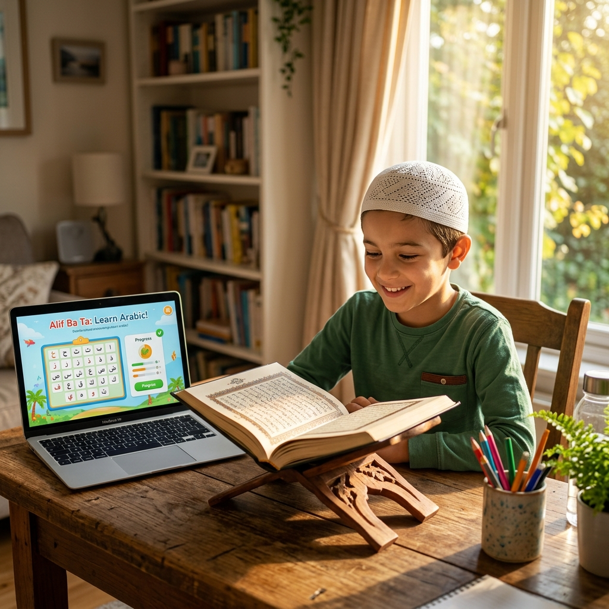

Learn Quran from Home with Certified Tutors
Muslim families across the United Kingdom are increasingly choosing online Quran tuition as a convenient and high-quality way to stay connected to their faith. Whether you are a parent looking for structured, engaging lessons for your child or an adult who wants to improve recitation and deepen understanding, Online Quran College is here to help. We provide certified, flexible, and affordable online Quran classes for kids and adults in UK, delivered live in a private 1-on-1 setting from the comfort of your own home.
Register Now
Personalized 1-on-1 Format
At Online Quran College, every student is matched with a certified native Arab or Pakistani teacher for private 1-on-1 sessions. This personalized format means your child or you receive dedicated attention throughout every lesson, progress at a comfortable pace, and follow a learning plan designed around your specific level and goals.
Why Choose Online Quran Tuition in the UK Over Traditional Classes
Modern UK life is busy. Between school runs, work commitments, and family responsibilities, finding the time to attend a mosque class regularly can be a real challenge for many families. Online Quran tuition solves this by bringing qualified, experienced teachers directly to your screen at a time that works for you, whether that is early morning, after school, in the evenings, or on weekends.
There are no large group classes, no waiting around, and no disruption from other students.
Book Free TrialLearn Quran Online with Tajweed from Certified Native Teachers
Tajweed refers to the set of rules that govern the correct pronunciation and recitation of the Quran. Reciting with proper Tajweed is not just a tradition but a responsibility, ensuring that every word is delivered with the precision and respect it deserves. At Online Quran College, our teachers are trained specialists in Tajweed who guide students through each rule in a clear, step-by-step manner covering pronunciation, articulation points, and recitation rhythm.
Our learn Quran online with Tajweed programme welcomes students at every stage. If you are an adult who has never formally studied Tajweed before, or a student looking to refine an already established recitation, our structured curriculum and regular feedback sessions give you everything you need to make real, measurable progress at your own pace.
Programmes for Everyone
We design specialized plans for kids, adults, and beginners to ensure smooth progress.
Best Online Quran Academy in UK for Kids
Children thrive when learning is made enjoyable, structured, and delivered with patience. Our online Quran academy is built with young learners in mind, using interactive teaching approaches, visual learning aids, repetition-based activities, and warm, child-friendly communication styles that hold attention and build genuine confidence over time.
Quran classes for kids cover the full beginner-to-advanced journey. Every child begins with a short assessment so the teacher can understand their current level and create a learning plan.
Quran Lessons Online UK for Adults
Many adults in the UK carry the desire to improve their Quranic recitation but feel unsure about where to start or whether it is too late to begin. It is never too late. Our Quran lessons online UK programme for adults is built on a foundation of respect, patience, and genuine support, creating an environment where adults at any level feel comfortable learning without judgment.
Whether you are a revert Muslim beginning your Quranic journey for the first time, someone who grew up without formal Quranic education, or an advanced learner, we have the right approach to help you succeed.
Online Quran Classes for Beginners
Starting something new always takes courage, and beginning Quranic education as a complete beginner is no exception. Our online Quran classes for beginners programme is specifically designed to remove that pressure and replace it with structure, encouragement, and clear milestones that show you exactly how far you have come.
Students begin with the Arabic alphabet and the Noorani Qaida before moving smoothly into word formation, basic reading, and eventually full Quran recitation with correct pronunciation.
Affordable Online Quran Tuition in UK Without Compromising on Quality
Every Muslim family in the UK deserves access to quality Quranic education regardless of their financial situation. Online Quran College is committed to keeping our online Quran tuition affordable, transparent, and free from hidden costs or registration fees. Our monthly pricing is structured simply so families can choose a schedule and fee plan that genuinely works for their budget.
A free trial class is available for all new students. This gives you the opportunity to experience the quality of our teaching, the professionalism of our teachers, and the ease of our online platform before making any commitment whatsoever. No payment is required to book your free trial.
View Fee PlansWhy Thousands of UK Families Trust Us
Online Quran College is a dedicated online Quran academy serving students across England, Scotland, Wales, and Northern Ireland, as well as internationally. Our mission is simple: to make professional, certified Quranic education accessible to every Muslim, at every level, at a time and price that works for their life.
- Certified native Arab and Pakistani tutors
- Private 1-on-1 teaching format
- Flexible scheduling across all time zones
- Committed to verified student progress
Frequently Asked Questions
Find answers to common questions about our online Quran classes in the UK.